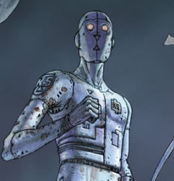
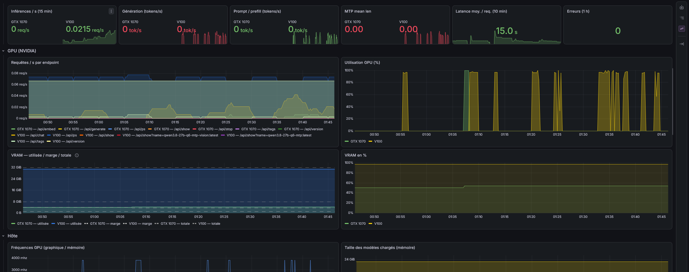

Il y a eu un moment, après avoir re-benché trois fois toutes les options sur la table, où le débit était bon. Pour moi, le tour est passé.
Et il y a une raison encore plus décisive : cette carte graphique est out of date. NVIDIA ne la supporte plus, personne ne publiera jamais une optimisation pour elle, et le niveau d'optimisation qu'on a atteint est, pour ce matériel, très correct. La veine est épuisée. On change de terrain.
Au début de la chasse, je m'identifiais à un prospecteur d'or : quelqu'un qui creuse n'importe où, sans savoir. On testait des pistes, on mesurait, on ne savait pas ce qui allait payer. H2 a payé trois jours. T3, le reste.
À la fin, on avait une foreuse : CUPTI et nsys donnaient, avant de creuser, la qualité de la terre sous nos pieds — combien de pourcents du total représente tel kernel, quel impact peut attendre une optimisation ciblée. À un moment, Kolbo-5 a fini par me parler de ROI pour classer les pistes possibles : espace théorique ×2-3 sur ce kernel, mais le coût de re-compilation rend le gain applicatif à 4-5 %, donc on repousse. La chasse est devenue une discipline de décision, plus de la pelle.
Pelle, foreuse, ROI. C'est l'arc entier.
Je suis quelqu'un de très transverse, je fonctionne beaucoup au modèle mental — celui qui cherche les invariants et les symétries dans les systèmes. J'ai une sorte de boucle quantique qui m'anime : je sais où je vais, mais je ne sais pas toujours expliquer mes choix, et pourtant ils sont dictés par mon expérience. Je sais sentir quand une étape est vraiment franchie.
Pour attaquer un grand problème, ma méthode tient en une image : 90 sacs de ciment de 30 kilos. Regardés en face, c'est 2,7 tonnes, et on se noie instantanément. Non. On va vers le premier sac, on le soulève, on l'amène à sa position finale. Une minute par sac, c'est une heure et demie. Plus on regarde le tas, moins on avance.
C'est exactement comme ça que la saga s'est faite : un sac à la fois. Le format de la 1070. Le split des sources. Le cône d'alu. La ligne BIOS. Le port d'un kernel. Une option de batch. Un dashboard. Chaque sac posé à sa position finale, mesuré, validé. Et même un NO-GO est un enseignement fort, peut-être même plus fort qu'une réussite — H2 jeté à la poubelle a dit quelque chose que T3 n'a pas pu dire : que le processus est gouverné par les chiffres, pas par l'attachement.
Cette rétrospective, c'est une façon d'ancrer tout ça. Parce que tout ça n'est pas qu'une histoire de recherche de performance. C'est aussi un auto-apprentissage complet des concepts de l'IA, vu sous un angle large. En juin, j'y connaissais strictement rien. En novembre, je parle de kernels disséqués au step près. Et je sais aujourd'hui que la question n'était jamais « combien de tokens par seconde » — c'était « combien à 170k ». Le débit brut, tout le monde l'a au départ ; la pente, il faut aller la chercher. Le mur du contexte n'a pas bougé, lui non plus : il était au début (faire rentrer mon code dans un 7B), il est à la fin (170k sur une V100). Ce qui a grossi, c'est la machine — et la personne qui la mesure.
Kolbo-5 doit son nom à RoboFlic, un vieux robot de la police de L'Incal, mis au rebut et récupéré par l'anti-héros John Difool. La référence est tombée juste : un robot déclassé, récupéré par un bricoleur qui n'avait même pas de compte ChatGPT il y a cinq mois. À ses côtés, une carte de datacenter que le marché avait enterrée, remise en service à 35-40 tokens par seconde à 170 000 tokens de contexte. Deux objets au rebut, un même artisan, un même résultat.

Et la machine, elle, est toujours là. En production, jour et nuit. Le dashboard dit le reste : zéro erreur sur la dernière heure, latence moyenne stable, le 27B en Q6 chargé sur la V100, la 1070 — celle qui a fait tourner des jeux pendant dix ans — qui, elle, a trouvé une seconde vie dessus.

Ce qu'on a fait est 100 % basé sur des pistes disjointes, publiées par des personnes différentes. C'est un réel assemblage de plusieurs mondes.
Il y a des choses que Kolbo-5 a trouvées tout seul, et je ne sais même pas toujours de quoi il s'agit. Il y a des pistes venues de dépôts qu'il a lus en silence. Il y a les miennes. Trois sources que je ne distingue plus toujours, et c'est honnête de le dire.
Je tiens à citer, à remercier :
fattn-mma-volta-small — le T3, l'optimisation reine, le kernel qui a détroné H2 et qui tient la production. C'est le master de T3.Et il y a la part humaine : le cadrage, les GO et les NO-GO, les trois boucles de re-vérification, le superviseur, la décision d'arrêter. C'est moi. Et c'est nous.
Le tour est passé pour cette terre. Mais je me dois de continuer, pour apprendre.
L'objectif suivant, ce sont les sujets que j'ai fait exprès d'ignorer pendant la chasse — ceux que je ressens comme immenses, et que je sais n'attaquer qu'un sac à la fois. Au centre, il y a le cache KV. Le premier chantier est déjà en tête : la persistance — d'abord en RAM, puis sur SSD — pour ne pas refaire un préfill complet à chaque nouvelle session. On ne repaye pas ce qu'on a déjà payé. Et autour, des trucs de dingue, que sûrement plein de gens ont déjà explorés — mais je me dois de le faire maintenant. Le KV est passionnant de par sa nature, de par ce qu'il représente : jouer avec, c'est la promesse de plein d'idées farfelues mais passionnantes.
La chasse est passée. La 1070 continue. Et la foreuse a déjà tourné vers un nouveau terrain.
Fin de la saga V100.